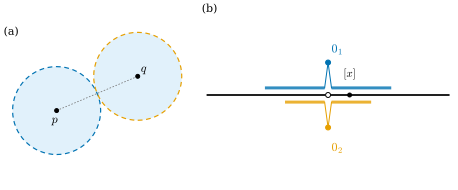
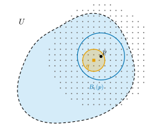

3.5 The Hausdorff and Second Countable Conditions
Goals
- Hausdorff 조건을 정의하고, 이 조건이 극한의 유일성을 보장함을 증명할 수 있다.
- “원점이 두 개인 직선”이 locally \(\R\)과 같지만 Hausdorff가 아님을 보일 수 있다.
- second countable 조건을 정의하고, \(\R^n\)과 그 subspace, 그리고 \(\RP^n\)이 이 조건을 만족함을 증명할 수 있다.
- \(\RP^n\)이 Hausdorff임을 증명할 수 있다.
Prerequisites
- Definition 3.1.20 (basis for a topology), Proposition 3.1.21 (basis의 판정)
- Definition 3.2.16 (수렴), Non-example 3.2.18 (극한이 여럿인 수열)
- Definition 3.3.1 (subspace topology), Definition 3.3.12 (product topology)
- Definition 3.4.4 (quotient topology), Proposition 3.4.13, Proposition 3.4.14 (\(S^n/{\pm} \cong \RP^n\))
Motivation
Section 3.4에서 \(\RP^n\)의 모든 점이 \(\R^n\)과 homeomorphic인 neighborhood를 가짐을 보였다. 그러면 “locally \(\R^n\)과 같다”는 것만으로 좋은 공간이라 할 수 있을까? 그렇지 않다. 두 직선을 원점만 빼고 모두 붙이면 “원점이 두 개인 직선”이 생긴다(Figure 3.5.1(b)). 이 공간도 모든 점이 \(\R\)과 homeomorphic인 neighborhood를 가진다. 그러나 두 원점은 어떤 neighborhood로도 떼어 놓을 수 없고, 수열 \(1/k\)은 두 원점으로 동시에 수렴한다. 극한이 하나로 정해지지 않으면 미분(극한으로 정의되는)을 할 수 없다.
이 절은 이런 pathological한 현상을 막는 두 조건을 다룬다. 하나는 서로 다른 두 점을 서로소인 neighborhood로 떼어 놓을 수 있다는 Hausdorff 조건이고, 다른 하나는 open set들이 countable개의 벽돌로 조립된다는 second countable 조건이다. Chapter 11은 topological manifold를 “locally Euclidean이고 Hausdorff이며 second countable인 공간”으로 정의한다. 이 절 끝에서 \(\RP^n\)이 세 조건을 모두 만족함을 알게 된다.

The Hausdorff Condition
Definition 3.5.1 (Hausdorff space). topological space \(X\)의 서로 다른 두 점 \(p \ne q\)마다 \(p\)의 neighborhood \(U\)와 \(q\)의 neighborhood \(V\)가 존재하여 \(U \cap V = \varnothing\)이면, \(X\)를 Hausdorff space(하우스도르프 공간)이라 한다.
Example 3.5.2. (a) 모든 metric space는 Hausdorff다. \(p \ne q\)이면 \(r = d(p, q)/2 \gt 0\)으로 두고 \(U = B_r(p)\), \(V = B_r(q)\)를 잡는다. \(x \in U \cap V\)라면 \(d(p, q) \le d(p, x) + d(x, q) \lt r + r = d(p, q)\)가 되어 모순이다. 특히 \(\R^n\)과 그 모든 subspace(Proposition 3.3.4(c))는 Hausdorff다.
(b) discrete topology는 Hausdorff다. \(\{p\}\)와 \(\{q\}\)가 서로소인 neighborhood이다.
Non-example 3.5.3. (a) 원소가 둘 이상인 집합의 trivial topology는 Hausdorff가 아니다. 모든 점의 neighborhood는 전체 공간 하나뿐이다.
(b) \(X = \{a, b\}\)에 topology \(\{\varnothing, \{a\}, X\}\)를 주면 Hausdorff가 아니다. \(b\)의 neighborhood는 \(X\)뿐이고, 이것은 \(a\)의 모든 neighborhood와 만난다.
Proposition 3.5.4. \(X\)가 Hausdorff space라 하자.
- (a) 한 점 집합은 닫혀 있다. 따라서 유한집합은 닫혀 있다.
- (b) \(X\)의 수열은 많아야 하나의 극한을 갖는다.
Proof. (a) \(q \ne p\)이면 서로소인 neighborhood \(U \ni p\), \(V \ni q\)가 있고, \(V\)는 \(p\)를 포함하지 않으므로 \(V \subseteq X \setminus \{p\}\)이다. 따라서 \(X \setminus \{p\}\)의 모든 점이 \(X \setminus \{p\}\) 안의 neighborhood를 가지므로 \(X \setminus \{p\}\)는 open set이다. 유한집합은 한 점 집합의 유한 합집합이다(Proposition 3.1.16(c)).
(b) \(x_k \to p\)이고 \(x_k \to q\), \(p \ne q\)라 하자. 서로소인 neighborhood \(U \ni p\), \(V \ni q\)를 잡는다. 수렴의 정의에서 \(k \ge K_1\)이면 \(x_k \in U\), \(k \ge K_2\)이면 \(x_k \in V\)인 \(K_1, K_2\)가 있다. \(k = \max(K_1, K_2)\)이면 \(x_k \in U \cap V = \varnothing\)이 되어 모순이다.
Proposition 3.5.4(b) 덕분에 Hausdorff space에서는 “극한 \(\lim x_k\)”라는 말을 쓸 수 있다. Hausdorff 조건은 subspace와 곱으로 물려받는다.
Proposition 3.5.5. Hausdorff space의 subspace는 Hausdorff다. 두 Hausdorff space의 product space는 Hausdorff다.
Proof. \(A \subseteq X\)이고 \(p \ne q \in A\)라 하자. \(X\)에서 서로소인 neighborhood \(U, V\)를 잡으면 \(U \cap A\)와 \(V \cap A\)는 \(A\)에서 \(p, q\)의 서로소인 neighborhood이다. \((x, y) \ne (x', y') \in X \times Y\)이면 \(x \ne x'\)이거나 \(y \ne y'\)이다. \(x \ne x'\)이면 \(X\)에서 서로소인 neighborhood \(U \ni x\), \(U' \ni x'\)을 잡아 \(U \times Y\)와 \(U' \times Y\)를 쓴다. 이 두 box는 서로소이다. \(y \ne y'\)인 경우도 같다.
quotient space는 Hausdorff 조건을 물려받지 않는다. 다음이 대표적인 예다.
Non-example 3.5.6 (line with two origins). \(X = \R \times \{1, 2\} \subseteq \R^2\)(평행한 두 직선)에서 \(x \ne 0\)이면 \((x, 1) \sim (x, 2)\)로 붙이고 나머지 점은 자기 자신과만 동치로 둔다. quotient space \(L = X/{\sim}\)을 원점이 두 개인 직선이라 한다. \(L\)의 점은 \([x]\) (\(x \ne 0\))와 두 원점 \(0_1 = [(0, 1)]\), \(0_2 = [(0, 2)]\)이다.
- locally \(\R\)과 같다. projection \(\pi\colon X \to L\)은 open map이다. 두 직선을 맞바꾸는 isometry \(\tau(x, k) = (x, 3 - k)\)를 쓰면, 열린 \(U \subseteq X\)에 대하여 \(\pi^{-1}(\pi(U)) = U \cup \big(\tau(U) \setminus \{(0, 1), (0, 2)\}\big)\)이다. \(\tau\)는 homeomorphism이므로 \(\tau(U)\)는 열려 있고, 한 점은 닫혀 있으므로(Example 3.1.18(b)) 거기서 두 점을 빼도 열려 있다. 따라서 \(\pi^{-1}(\pi(U))\)가 열려 있고, quotient topology의 정의에 의해 \(\pi(U)\)는 열려 있다. \(k = 1, 2\)에 대하여 직선 \(\R \times \{k\}\)은 \(X\)에서 열려 있고(\(X \cap \{y \gt 3/2\}\) 또는 \(X \cap \{y \lt 3/2\}\)), \(\pi\)를 이 직선으로 제한한 것은 열린 image \(V_k = \pi(\R \times \{k\})\) 위로의 연속 bijective open map이므로 homeomorphism이다(Proposition 3.2.13). 즉 \(V_1 \cong \R \cong V_2\)이고 \(V_1 \cup V_2 = L\)이다.
- Hausdorff가 아니다. \(W_1 \ni 0_1\), \(W_2 \ni 0_2\)가 열려 있다고 하자. \(\pi^{-1}(W_1)\)은 \((0, 1)\)을 포함하는 open set이므로 어떤 \((-\varepsilon, \varepsilon) \times \{1\}\)을 포함하고, \(\pi^{-1}(W_2)\)도 어떤 \((-\varepsilon', \varepsilon') \times \{2\}\)를 포함한다. \(x = \min(\varepsilon, \varepsilon')/2\)이면 \(x \ne 0\)이고 \([x] = \pi(x, 1) = \pi(x, 2) \in W_1 \cap W_2\)이다(Figure 3.5.1(b)).
- 극한이 두 개. 같은 논증으로 수열 \([1/k]\)는 \(0_1\)과 \(0_2\)로 모두 수렴한다(Exercise 3.5.2).
\(X\)는 \(\R^2\)의 subspace이므로 Hausdorff인데, quotient space \(L\)은 그렇지 않다.
Proposition 3.5.7. \(\RP^n\)은 Hausdorff다.
Proof idea: sphere 모형 \(S^n/{\pm}\)을 쓴다. 서로 다른 두 점은 네 점 \(\pm x\), \(\pm y\)로 올라가고, 네 점 둘레의 작은 ball들이 서로소이면 그 image들이 서로소인 neighborhood가 된다.
Proof. \(\pi_S = \pi \circ \iota\colon S^n \to \RP^n\)(\(\iota\)는 inclusion map)이라 하자. Proposition 3.4.14에 의해 \(\pi_S = F \circ p\)는 quotient map \(p\colon S^n \to S^n/{\pm}\)와 homeomorphism \(F\)의 합성이므로 quotient map이다(\(V\)가 열려 있음 \(\iff\) \(F^{-1}(V)\)가 열려 있음 \(\iff\) \(p^{-1}(F^{-1}(V))\)가 열려 있음). 또 \(\pi_S\)는 open map이다: \(W \subseteq S^n\)이 열려 있으면 \(\pi_S^{-1}(\pi_S(W)) = W \cup (-W)\)이고, \(x \mapsto -x\)가 \(S^n\)의 homeomorphism이므로 \(-W\)도 열려 있다. \(\pi_S\)가 quotient map이므로 \(\pi_S(W)\)는 열려 있다.
\(\RP^n\)의 서로 다른 두 점을 \(\pi_S(x)\), \(\pi_S(y)\) (\(x, y \in S^n\))라 하자. 두 점이 다르므로 \(y \ne \pm x\)이다.
로 두고 \(W_x = B_\varepsilon(x) \cap S^n\), \(W_y = B_\varepsilon(y) \cap S^n\)이라 하자. \(\pi_S(W_x)\)와 \(\pi_S(W_y)\)는 open set이고 각각 \(\pi_S(x)\), \(\pi_S(y)\)를 포함한다. 두 집합이 서로소임을 보이자. \(\pi_S(a) = \pi_S(b)\)이고 \(a \in W_x\), \(b \in W_y\)라 가정하면 \(b = a\)이거나 \(b = -a\)이다.
- \(b = a\)이면 \(a \in B_\varepsilon(x) \cap B_\varepsilon(y)\)이지만, \(\abs{x - y} \ge 2\varepsilon\)이므로 Example 3.5.2(a)의 논증에 의해 두 ball은 서로소이다.
- \(b = -a\)이면 \(\abs{-a - y} \lt \varepsilon\), 즉 \(a \in B_\varepsilon(-y)\)이다. 그러면 \(a \in B_\varepsilon(x) \cap B_\varepsilon(-y)\)인데, \(\abs{x - (-y)} = \abs{x + y} \ge 2\varepsilon\)이므로 역시 두 ball은 서로소이다.
어느 쪽이든 모순이므로 \(\pi_S(W_x) \cap \pi_S(W_y) = \varnothing\)이다.
Verification: verify/v-3-5-hausdorff-second-countable.py
The Second Countable Condition
집합이 countable이라는 것은 유한이거나 자연수 전체 \(\{1, 2, 3, \dots\}\)와 일대일대응이 있다는 뜻이다. 즉 원소들을 (유한하거나 무한한) 수열로 늘어놓을 수 있다. 다음 사실을 쓴다. countable 집합의 부분집합은 countable이다. \(\Z\)와 \(\Q\)는 countable이다. countable 집합 유한개의 곱과 countable개의 countable 집합의 합집합은 countable이다 (앞의 것은 \((m, n) \mapsto 2^m 3^n\)이 자연수의 쌍에서 자연수로 가는 injective이기 때문이다). 반면 \(\R\)은 countable이 아니다(Cantor의 대각선 논법).
Definition 3.5.8 (second countable space). topological space \(X\)의 topology가 countable개의 원소로 이루어진 basis를 가지면, \(X\)를 second countable(제2가산) 공간이라 한다.
Proposition 3.5.9 (\(\R^n\) is second countable). 중심이 유리점(모든 성분이 유리수인 점)이고 반지름이 양의 유리수인 open ball \(B_r(q)\) (\(q \in \Q^n\), \(r \in \Q\), \(r \gt 0\))들의 collection \(\mathcal{B}_{\Q}\)는 \(\R^n\)의 countable basis다.
Proof idea: \(p\) 둘레의 ball \(B_\varepsilon(p) \subseteq U\)가 있으면, \(p\)에 아주 가까운 유리점 \(q\)를 중심으로 반지름이 \(\varepsilon\)의 절반보다 작은 ball을 잡는다. 그 ball은 \(p\)를 품으면서 \(B_\varepsilon(p)\) 안에 들어간다.
Proof. \(\mathcal{B}_{\Q}\)는 \(\Q^n \times \Q\)의 부분집합으로 번호를 매길 수 있으므로 countable이다. Proposition 3.1.21의 조건을 확인한다. \(U\)가 열려 있고 \(p \in U\)이면 \(B_\varepsilon(p) \subseteq U\)인 \(\varepsilon \gt 0\)이 있다. \(0 \lt r \lt \varepsilon/2\)인 유리수 \(r\)을 고르고, 각 성분이 \(\abs{q^i - p^i} \lt r/\sqrt{n}\)인 유리점 \(q\)를 고른다 (모든 구간에 유리수가 있다). 그러면 \(\abs{q - p} \lt \sqrt{n \cdot r^2/n} = r\)이므로 \(p \in B_r(q)\)이다. 또 \(x \in B_r(q)\)이면 \(\abs{x - p} \le \abs{x - q} + \abs{q - p} \lt 2r \lt \varepsilon\)이므로 \(B_r(q) \subseteq B_\varepsilon(p) \subseteq U\)이다(Figure 3.5.2).

Proposition 3.5.10. second countable 공간의 subspace는 second countable이다. 두 second countable 공간의 product space는 second countable이다. 특히 \(\R^n\)의 모든 subspace(\(S^n\), torus \(T^2 \subseteq \R^4\), torus of revolution 등)은 second countable이다.
Proof. \(\mathcal{B}\)가 \(X\)의 countable basis이고 \(A \subseteq X\)이면 \(\{B \cap A : B \in \mathcal{B}\}\)는 countable이고 \(A\)의 basis다. \(A\)의 open set \(U \cap A\)와 \(p \in U \cap A\)에 대해 \(p \in B \subseteq U\)인 \(B \in \mathcal{B}\)를 잡으면 \(p \in B \cap A \subseteq U \cap A\)이기 때문이다. 곱의 경우 \(\mathcal{B}\), \(\mathcal{B}'\)이 countable basis이면 \(\{B \times B'\}\)은 countable이고, product topology의 open set \(W\)와 \((x, y) \in W\)에 대해 \((x, y) \in U \times V \subseteq W\)인 box를 잡은 뒤 \(x \in B \subseteq U\), \(y \in B' \subseteq V\)로 줄이면 \((x, y) \in B \times B' \subseteq W\)이다.
Proposition 3.5.11. \(f\colon X \to Y\)가 연속 surjective open map이고 \(X\)가 second countable이면 \(Y\)도 second countable이다. 따라서 \(\RP^n\)은 second countable이다.
Proof. \(\mathcal{B}\)가 \(X\)의 countable basis이면 \(\{f(B) : B \in \mathcal{B}\}\)는 countable이고, \(f\)가 open map이므로 open set들의 collection이다. \(V \subseteq Y\)가 열려 있고 \(y \in V\)이면 \(f(x) = y\)인 \(x\)를 잡는다. \(f^{-1}(V)\)는 \(x\)를 포함하는 open set이므로 \(x \in B \subseteq f^{-1}(V)\)인 \(B \in \mathcal{B}\)가 있고, \(y \in f(B) \subseteq V\)이다. Proposition 3.1.21에 의해 \(\{f(B)\}\)는 basis다. \(\RP^n\)의 경우 \(\R^{n+1} \setminus \{0\}\)은 \(\R^{n+1}\)의 subspace이므로 second countable이고(Proposition 3.5.10), \(\pi\)는 연속 surjective open map이다(Proposition 3.4.13).
Non-example 3.5.12. (a) \(\R\)에 discrete topology를 주면 second countable이 아니다. 어떤 basis \(\mathcal{B}\)든 open set \(\{x\}\)를 합집합으로 만들어야 하므로 \(\{x\} \in \mathcal{B}\)이다. 따라서 \(\mathcal{B}\)는 countable이 아닌 \(\R\)만큼의 원소를 가진다. 이 공간은 metric space(discrete metric)이고 Hausdorff다.
(b) product space \(\R \times \R_{\text{discrete}}\)(첫째 인자는 standard topology, 둘째는 discrete topology)는 서로소인 직선 \(\R \times \{y\}\)를 countable이 아닌 개수만큼 늘어놓은 것이다. 각 점은 \(\R\)과 homeomorphic인 neighborhood \(\R \times \{y\}\)를 가지고 Hausdorff이지만(Proposition 3.5.5), second countable이 아니다. basis는 각 \(y\)에 대해 \(\R \times \{y\}\) 안에 들어가는 원소를 적어도 하나씩 가져야 하고, 그런 원소들은 \(y\)마다 서로 다르기 때문이다.
Summary
- Hausdorff space에서는 서로 다른 두 점을 서로소인 neighborhood로 떼어 놓을 수 있다. metric space는 Hausdorff이고, subspace와 곱이 이 성질을 물려받는다.
- Hausdorff space에서 한 점은 닫혀 있고 수열의 극한은 유일하다(Proposition 3.5.4).
- 원점이 두 개인 직선은 locally \(\R\)과 같지만 Hausdorff가 아니다. quotient space는 Hausdorff 조건을 물려받지 않는다(Non-example 3.5.6).
- second countable 공간은 countable basis를 가진다. \(\R^n\)은 유리 중심·유리 반지름의 ball들을 basis로 가지며, 그 subspace와 곱, 열린 quotient map의 image도 second countable이다.
- \(\RP^n\)은 Hausdorff이고 second countable이다(Proposition 3.5.7, Proposition 3.5.11).
다음 절에서는 compactness를 다룬다. 모든 open cover가 유한 subcover를 가진다는 이 성질은 \(\R^n\)에서는 “닫혀 있고 bounded”와 같고(Heine–Borel theorem), 연속함수가 최댓값을 갖게 해 주며, Section 3.4에서 남겨 둔 “정사각형의 quotient space \(\cong T^2\)”를 한 줄로 증명하게 해 준다.
Exercises
Exercise 3.5.1 ★ 두 점 집합 \(\{a, b\}\) 위의 topology를 모두 나열하고, 그 가운데 Hausdorff인 것을 찾아라.
Solution
topology는 \(\varnothing\)과 \(\{a, b\}\)를 반드시 포함하고, 나머지 원소로 \(\{a\}\), \(\{b\}\)를 넣을지 정한다. 네 가지 모두 topology이다: \(\{\varnothing, X\}\), \(\{\varnothing, \{a\}, X\}\), \(\{\varnothing, \{b\}, X\}\), \(\{\varnothing, \{a\}, \{b\}, X\}\). Hausdorff이려면 \(a\)와 \(b\)의 서로소인 neighborhood가 필요하므로 \(\{a\}\)와 \(\{b\}\)가 모두 열려 있어야 한다. 따라서 discrete topology \(\{\varnothing, \{a\}, \{b\}, X\}\)만 Hausdorff다.
Exercise 3.5.2 ★ 원점이 두 개인 직선 \(L\)(Non-example 3.5.6)에서 수열 \([1/k]\)가 \(0_1\)과 \(0_2\)로 모두 수렴함을 보여라.
Solution
\(W\)가 \(0_1\)의 neighborhood이면 \(\pi^{-1}(W)\)는 \((0, 1)\)을 포함하는 open set이므로 어떤 \((-\varepsilon, \varepsilon) \times \{1\}\)을 포함한다. \(k \gt 1/\varepsilon\)이면 \((1/k, 1) \in \pi^{-1}(W)\)이므로 \([1/k] \in W\)이다. 따라서 \([1/k] \to 0_1\)이다. \(0_2\)에 대해서도 \((1/k, 2)\)로 같은 논증을 한다. (\(L\)이 Hausdorff가 아니므로 Proposition 3.5.4(b)와 모순되지 않는다.)
Exercise 3.5.3 ★ \(\Z \subseteq \R\)의 subspace topology는 discrete topology이다(Example 3.3.2(d)). \(\Z\)가 second countable임을 두 가지 방법(Proposition 3.5.10, 직접)으로 보여라. \(\R\)의 discrete topology가 second countable이 아닌 것(Non-example 3.5.12(a))과 무엇이 다른가?
Solution
Proposition 3.5.10: \(\Z\)는 second countable 공간 \(\R\)의 subspace이다. 직접: 한 점 집합 \(\{k\}\) (\(k \in \Z\))들의 collection은 discrete topology의 basis이고(Example 3.1.22(b)) \(\Z\)가 countable이므로 countable이다. 차이는 점의 개수다. discrete topology의 basis는 모든 한 점 집합을 포함해야 하므로, 이산공간이 second countable일 필요충분조건은 점이 countable개인 것이다. \(\R\)은 countable이 아니다.
Exercise 3.5.4 ★ 무한집합 \(X\)에서 \(\mathcal{T} = \{\varnothing\} \cup \{U \subseteq X : X \setminus U \text{가 유한}\}\)이 topology임을 보이고(여유한 topology), 한 점 집합이 닫혀 있지만 \(X\)가 Hausdorff가 아님을 보여라.
Solution
topology. \(\varnothing\)이 있고 \(X \setminus X = \varnothing\)은 유한이다. 공집합이 아닌 원소들의 합집합의 여집합은 각 여집합의 교집합이므로 유한하다. 두 원소 \(U, V\)가 공집합이 아니면 \(X \setminus (U \cap V) = (X \setminus U) \cup (X \setminus V)\)는 유한이다(어느 하나가 \(\varnothing\)이면 교집합은 \(\varnothing\)).
한 점은 닫힘. \(X \setminus \{p\}\)의 여집합 \(\{p\}\)가 유한이므로 \(X \setminus \{p\}\)는 열려 있다.
Hausdorff가 아님. 공집합이 아닌 두 open set \(U, V\)가 서로소라면 \(X = X \setminus (U \cap V) = (X \setminus U) \cup (X \setminus V)\)는 유한집합이어야 하는데, \(X\)는 무한이다. 따라서 공집합이 아닌 두 open set은 언제나 만나고, 서로 다른 두 점을 separation할 수 없다. (Proposition 3.5.4(a)의 역은 성립하지 않는다.)
Exercise 3.5.5 ★★ \(X\)가 Hausdorff일 필요충분조건은 대각선 \(\Delta = \{(x, x) : x \in X\}\)가 \(X \times X\)에서 닫혀 있는 것임을 보여라.
Solution
\((X \times X) \setminus \Delta\)가 열려 있다는 것은, \(x \ne y\)인 모든 \((x, y)\)에 대해 \((x, y) \in U \times V \subseteq (X \times X) \setminus \Delta\)인 box가 있다는 것이다 (Definition 3.3.12 뒤의 설명). 그런데 \(U \times V\)가 \(\Delta\)와 만나지 않는다는 것은 \((z, z) \in U \times V\)인 \(z\)가 없다는 것, 즉 \(U \cap V = \varnothing\)이라는 것이다. 따라서 두 조건은 같은 말이다.
Exercise 3.5.6 ★★ \(X\)가 Hausdorff이고 \(f, g\colon Y \to X\)가 연속이면 \(\{y \in Y : f(y) = g(y)\}\)가 \(Y\)에서 닫혀 있음을 보여라.
Hint
\((f, g)\colon Y \to X \times X\)와 Exercise 3.5.5를 쓴다.
Solution
\(h = (f, g)\colon Y \to X \times X\)는 성분이 연속이므로 연속이다(Theorem 3.3.15(b)). 주어진 집합은 \(h^{-1}(\Delta)\)이고, Exercise 3.5.5에 의해 \(\Delta\)가 닫혀 있으므로 Proposition 3.2.7에 의해 닫혀 있다.
Exercise 3.5.7 ★★★ \(f\colon X \to Y\)가 연속 surjective open map이고 \(\Gamma = \{(x, x') \in X \times X : f(x) = f(x')\}\)이 \(X \times X\)에서 닫혀 있으면 \(Y\)가 Hausdorff임을 보여라. 이것을 \(\RP^n\)에 적용하여 Proposition 3.5.7을 다시 증명하여라.
Hint
\(\RP^n\)의 경우 \(\Gamma = \{(x, y) : x, y \text{ linearly dependent}\}\)이고, 이것은 \(2 \times 2\) minor \(x^iy^j - x^jy^i\)가 모두 \(0\)인 점들이다.
Solution
\(f(x) \ne f(x')\)이면 \((x, x') \notin \Gamma\)이고 \(\Gamma\)의 여집합이 열려 있으므로 \((x, x') \in U \times U' \subseteq (X \times X) \setminus \Gamma\)인 box가 있다. \(f(U)\)와 \(f(U')\)는 \(f\)가 open map이므로 열려 있고, 각각 \(f(x)\), \(f(x')\)을 포함한다. 서로소이다: \(f(u) = f(u')\) (\(u \in U\), \(u' \in U'\))이면 \((u, u') \in \Gamma \cap (U \times U')\)가 되어 모순이다.
\(\RP^n\): \(X = \R^{n+1} \setminus \{0\}\)이고 \(\pi\)는 연속 surjective open map이다(Proposition 3.4.13). \(x, y \ne 0\)에 대해 \(\pi(x) = \pi(y)\)는 \(y = \lambda x\)인 것, 즉 \((x, y)\)가 linearly dependent인 것이고, 이것은 열이 \(x, y\)인 \((n+1) \times 2\) 행렬의 rank가 \(1\)인 것, 즉 모든 \(2 \times 2\) minor \(x^iy^j - x^jy^i\)가 \(0\)인 것과 같다. 각 minor는 \(X \times X\) 위의 연속함수이므로 \(\Gamma\)는 closed set들의 교집합으로서 닫혀 있다. 앞의 결과에 의해 \(\RP^n\)은 Hausdorff다.
Verification: verify/v-3-5-hausdorff-second-countable.py (minor 판정의 수치 확인)